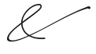
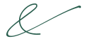

standaard — tussen kapitalen
Art Events
Events
EventsKunst Gastvrijheid
Gastvrijheid
Gastvrijheidals los merkteken
kleurvarianten


standaard — tussen kapitalen
EventsGastvrijheidals los merkteken
kleurvarianten


niet in doorlopende tekst
Onze galerie beeldentuin
Onder ±24px worden de haarlijnen een vlekje. In bodycopy blijft de gewone & van Raleway staan — dat is niet de ampersand waar het team over viel.
niet de & van Playfair
Art & EventsIn koppen, labels en het logo hoort altijd de swirl te staan, nooit het getypte teken.
Gebruik. <img class="amp amp-caps" src="assets/ornament-swirl-goud.svg" alt="en"> tussen twee woorden; de klasse uit tokens/ornament.css schaalt mee met de regel. Kies het bestand op ondergrond: goud op wit en crème, wit op flessengroen en foto’s, ink voor zwart-wit, groen op licht. De ontwerper schrijft de swirl voor achter de e van Hoeve in het logo, en tussen kapitalen — zeker bij ART & EVENTS.